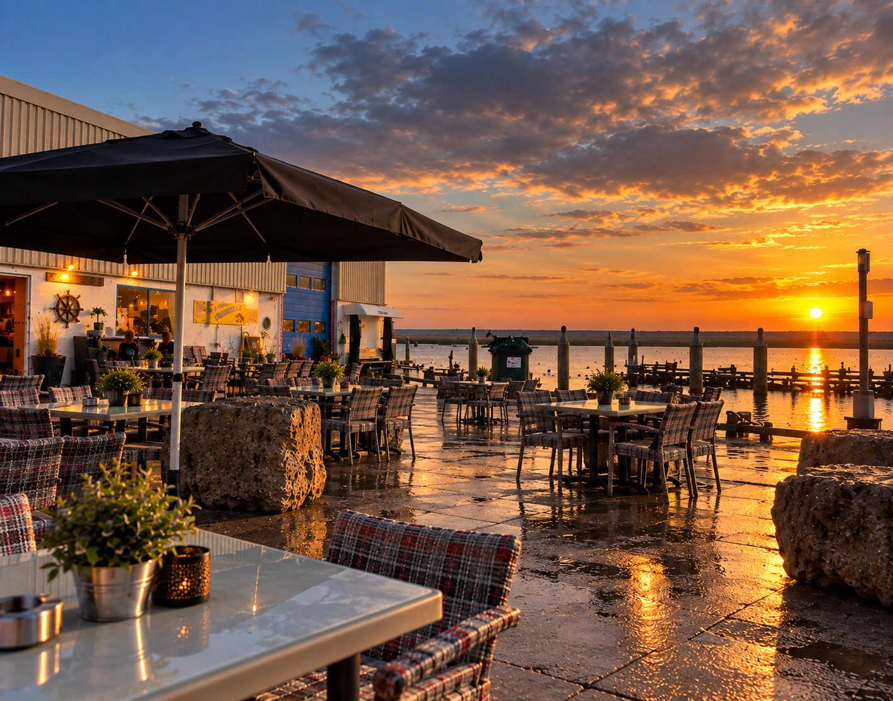
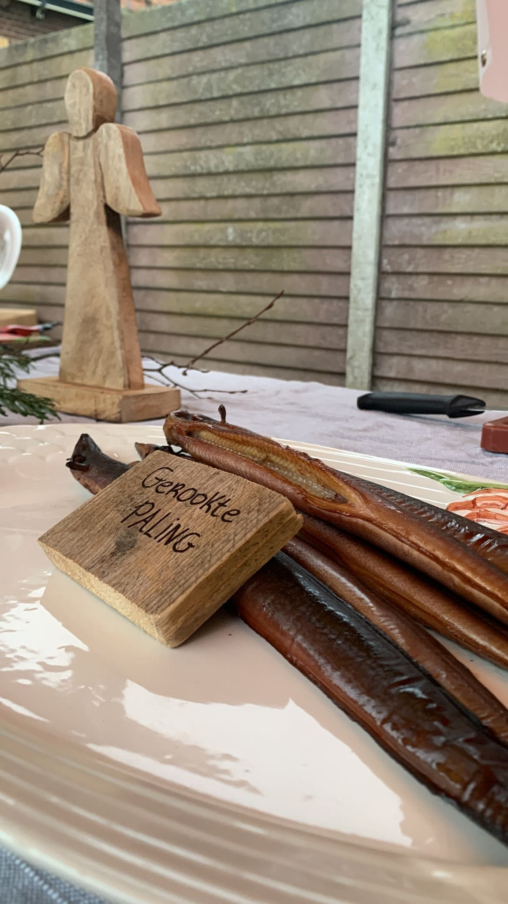
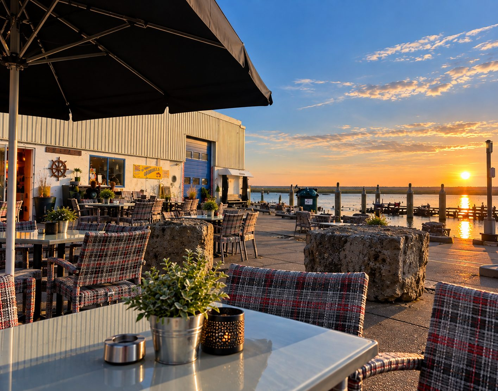
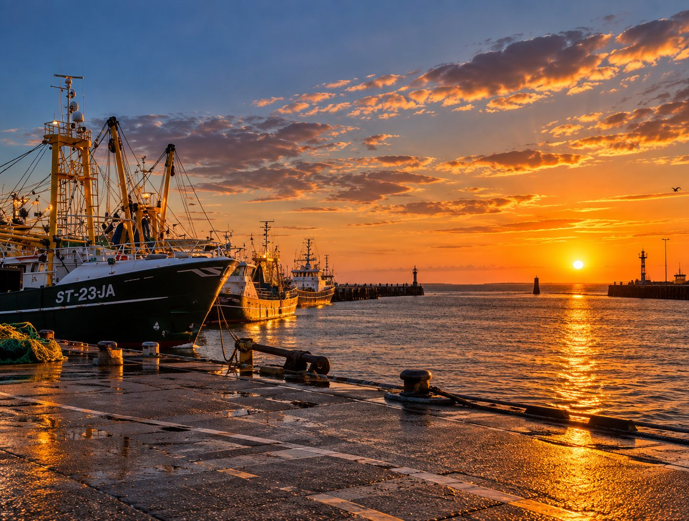

Onderdeel van de vismijn
De Ambachtswinkel
Op de buitenhaven van Stellendam, naast de vismijn. Verse vis direct van de boot, ambachtelijke producten van Wesley en Marjoleine, en een terras met uitzicht over het water.
Het concept
Het beste van zee en land
De Ambachtswinkel staat op de buitenhaven van Stellendam, naast de vismijn. Je haalt er verse vis direct van de boot, ambachtelijke producten van Wesley en Marjoleine, en eet je ze desgewenst meteen op het terras met uitzicht over het water.
Verse vis
Direct van de vismijn. Elke week vers aangeleverd.
Ambachtelijke producten
Gerookt vlees, vis en specialiteiten. Huisgemaakt door Wesley en Marjoleine.
Afhaalmaaltijden
Stel zelf samen: aardappel, groenten en vlees. Warm klaar voor thuis.
Verse broodjes
Vers belegd met onze producten. Gerookte zalm, paling, pulled pork en meer.
Patat en snacks
Verse patat met kibbeling en zelfgemaakte snacks.
Terras aan het water
Opeten aan de haven of meenemen. Jij kiest.
Van de kaart
Wat er ligt
Een klein deel van wat er elke week ligt. De rest verschilt met de vismijn en met wat er op de grill gebeurt.
Verse vis van de boot
Vraag hetElke week vers aangeleverd uit de vismijn. Wat er ligt, hangt af van de visserij.
Plateau gebakken vis
€ 14,50 p.p.Gebakken vis met bijbehorende sauzen.
Gerookte zalm, zelf gerookt
Vraag hetLangzaam gerookt, zonder kunstmatige toevoegingen. Plakken voor thuis of voor de borrel.
Huisgerookte palingfilet
Vraag hetUit de eigen rookoven. Filet voor thuis of voor de borrel.
Verse broodjes
Met het brood van Bakkerij van Harberden. Gerookte zalm, paling, pulled pork of ambachtelijke worst.

Lokaal samenwerken
Het beste van Stellendam onder één dak
Wij werken met de mensen om de hoek. Verse groenten, vers brood, verse garnalen en vis uit de vismijn.
Om de hoek
Een rondje langs de haven
Alles wat je op vijf minuten lopen vindt. Leuk om te combineren met een afhaalmaaltijd.
De vismijn
Om de hoek. Verse vis, elke week aangeleverd.
Pel Centrale
Onze achterburen aan de haven. Verse garnalen.
Het havenplein
Terrassen, de havenkroeg en de zonsondergang.
De kust
Vijf minuten lopen naar de Noordzee.

Een tafel aan het water, en de zon die eronderdoor zakt.
Het terras van de Ambachtswinkel aan de buitenhaven.
Bezoeken
Waar je ons vindt
Adres
Meester Snijderweg 5 (voorzijde)
3251 LJ Stellendam
Openingstijden
- Dinsdag t/m vrijdag
- 10:00 tot 18:00
- Zaterdag
- 10:00 tot 18:00
- Zondag en maandag
- Gesloten
Telefoon
Parkeren
Gratis parkeerplaats bij de haven.
Route
Praktisch
Veelgestelde vragen
Wat klanten ons het vaakst vragen voordat ze komen.
Moet ik vooruit betalen?
Voor buffetten vanaf 10 personen en voor catering op locatie maken wij een offerte op maat. De prijzen op de site zijn inclusief btw en gelden zolang de samenstelling hetzelfde blijft.
Komen jullie ook op locatie?
Ja. Voor BBQ, buffetten, walking diner en hapjes komen wij naar jouw locatie. De kok en bediening kunnen wij regelen, vanaf € 57,50 per uur inclusief btw per persoon.
Wat zit er bij de buffetten?
Bij de buffetten is brood met smeersels, fruitsalade, knoflooksaus en cocktailsaus standaard inbegrepen. Bestek, borden en buffettafels zijn dat niet, die worden apart berekend.
Hoe lang vooruit moet ik bestellen?
Voor borrelplanken adviseren wij minimaal tien personen en een dag van tevoren bestellen. Salades bestel je vanaf vijf personen. Voor buffetten geldt een minimum van tien personen.
Kunnen jullie de vergaderruimte huren?
Ja. De ruimte is € 120 per dagdeel en standaard ingericht met flipover en whiteboard. Een beamer huur je op aanvraag. Koffie, lunch en borrel kunnen we erbij verzorgen.
Hebben jullie ook een terras?
De Ambachtswinkel heeft een terras aan de buitenhaven met uitzicht over het water. Je kunt bij ons eten, of je haalt je afhaalmaaltijd mee naar huis.

Kom je langs?
Of wil je meteen een tafel reserveren aan het water? Bel of mail ons, dan zetten we het klaar.